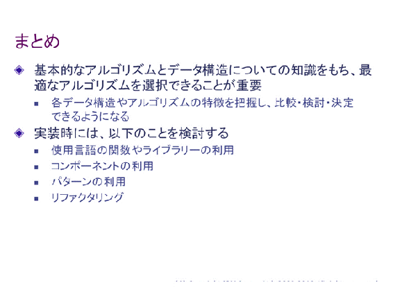

| アルゴリズムとデータ構造 (C言語版): 言語を使いこなすための基礎を学ぶ スキルズ・オン・デマンド研修プログラム | |
| アイ・ラーニング | |
| (2015) | |
このコースの学習目標は以下のとおりです。- アルゴリズムとデータ構造の定義を理解する- 配列、リスト、スタック、キュー、ツリーといった基本的なデータ構造について説明できるようになる- サーチやソートに用いられる基本的なアルゴリズムの種類とその仕組みについて説明できるようになる- グラフの構造と、そのアルゴリズムについて説明できるようになる- アルゴリズムやデータ構造を検討する際の注意点を理解する
アルゴリズムとデータ構造[C言語版]
はじめに
学習目標
このコースの学習目標は以下のとおりです。
- アルゴリズムとデータ構造の定義を理解する
- 配列、リスト、スタック、キュー、ツリーといった基本的なデータ構造について説明できるようになる
- サーチやソートに用いられる基本的なアルゴリズムの種類とその仕組みについて説明できるようになる
- グラフの構造と、そのアルゴリズムについて説明できるようになる
- アルゴリズムやデータ構造を検討する際の注意点を理解する
このコースでは、はじめにアルゴリズムとデータ構造の定義を学習した上で、代表的なデータ構造とそれらを用いたアルゴリズムについて学習していきます。そして最後に、実際の開発においてアルゴリズムやデータ構造を使用する際の注意点について学習します。
標準的な学習時間は6時間です。
第1章 アルゴリズムとデータ構造の基礎
この章では、個々のアルゴリズムやデータ構造について詳しく学習する前に、アルゴリズムやデータ構造の定義、アルゴリズムの評価基準など、アルゴリズムとデータ構造について学ぶ際に基礎となる知識を学習します。
「アルゴリズム」とは、ある問題を解決するために定義された一連の処理手順のことです。
一般に、次の条件を満たすものを、よいアルゴリズムといいます。
- 必ず正しい解答を得られるもの
- 解答を早く得られるもの
- 理解しやすいもの
- 再利用可能なもの
以上のような条件を満たすアルゴリズムをプログラムとして記述し、そのプログラムを実行することで、問題を解決します。
ただし、実際には、必ずしもすべての条件を満たすアルゴリズムを採用できるとは限りません。例えば、解答は短時間で得られるが、処理手順が理解しがたく再利用が難しいアルゴリズムがあります。逆に、理解しやすく再利用性も高いものの、解答を得るのに時間がかかるアルゴリズムもあります。開発対象となるプログラムの要件等によって、重視すべき点も変わってくることを覚えておいてください。これについては最後の章で詳しく学習します。
加えて、プログラムにおいてアルゴリズムを用いて問題を解く際には、必要な情報（データ）を保持・操作する必要があります。コンピューター上でのその情報（データ）の保存形式を、「データ構造」といいます。アルゴリズムが問題を解く手順であるならば、データ構造はそのために使う道具であるということができます。それぞれの手順には、それぞれに適した道具があります。アルゴリズムとデータ構造の学習では、問題を解決するのに適したアルゴリズムとデータ構造の組み合わせを選択・決定するための知識・スキルを修得することが重要です。
問題を解決するのに適したアルゴリズムを選択・決定するためには、その評価を明確に行う必要があります。
一般的に、アルゴリズムを評価する際には、そのアルゴリズムがどれくらいの時間で解答を出せるのかが重要な評価基準となります。この解答が出るまでの時間を、「時間計算量」といいます。
その際、アルゴリズムにとってもっとも不利な（つまり時間計算量を最悪にする）入力データを与えたものを「最大時間計算量」といいます。
これとは逆に、アルゴリズムにとってもっとも有利な（つまり時間計算量を最良にする）入力データを与えたものを「最小時間計算量」といいます。
アルゴリズムを評価する際には、最大時間計算量の方を基準にするのが一般的ですが、常に最悪のデータばかりが入力されるとは限りません。実用上は、最悪のデータが入力される確率が無視できる範囲に収まる場合もあります。むしろ、一部の特殊な入力データではなく、その他多くの一般的な入力データに対する時間計算量が問題になる場合もあります。そこで、入力可能なすべてのデータに対する平均計算量である「平均時間計算量」を基準にする場合があります。
どの計算量を基準にするかは、アルゴリズムを用いる状況によって異なります。例えば、長時間の計算が一つでも生じると処理全体に多大な影響を与えてしまうようなリアルタイム処理の場合、最大時間計算量が重要な評価基準となるでしょう。
逆に、個々の計算時間よりもそれらを合計した全体としての計算時間が問題になるようなバッチ処理の場合、平均時間計算量が重要な評価基準となるでしょう。
また、実用的なアルゴリズムの中には「最大時間計算量は大きいが、平均時間計算量は小さい」というものも多くあります。
状況に応じて最適な評価基準を選択することが重要です。
それでは、実際にアルゴリズムの計算量はどのように表現するのでしょう。
計算量を表現する場合、解決すべき"問題の大きさ"を n として表し、この n をパラメーターとした関数 f(n) を計算量とします。パラメーター n は、例えば入力するデータの個数などです。
しかし、計算量を詳細に記述しようとすれば、n に対してさまざまな形の関数が成立し、比較評価が難しくなってしまいます。そこで、O（ビッグオー）記法と呼ばれる記法を用いて、単純化を行います。
O記法を用いるためには、一定値を超える n に関して、他の項に比べ計算量に絶対的な影響を与える項が存在することが前提となります。
例えば、f(n) = n2+2n （※nの2乗 + 2n）という式で計算量が表現されるとき、n がある程度大きな数をとれば、n2（※nの2乗）は 2n を無視してもかまわないほど大きな値をとります。
つまり、この式において計算量に絶対的な影響を与える項は n2 （※nの2乗）となります。このとき、n2 （※nの2乗）は計算量を近似した関数ということができます。 O記法では、この計算量を近似した関数を g(n) として、計算量を f(n) = O(g(n)) と表現します。上の式をO記法で表現すれば、O(n2)（※nの2乗）となります。アルゴリズムについて学習するとき、O記法はよく登場するので、覚えておきましょう。
ところで、問題を解決しようとした際、効率のよいアルゴリズムが存在する場合と、そのようなものが存在しない場合とがあります。前者を「やさしい問題」と呼び、後者を「難しい問題」と呼びます。
例えば、与えられたパラメーターに対して、すべての組み合わせやすべての順序をしらみつぶしに検証しなくては、解答を得られないような場合、時間計算量は指数関数的に増えることになり、それは「難しい問題」であるといえます。
「やさしい問題」であるかどうかは、実際にそれを解決するための効率のよいアルゴリズムを作成すれば証明できますが、「難しい問題」であることの証明は、それを解決する効率的なアルゴリズムが存在しないことを証明しなくてはならず困難です。
実際、「効率的なアルゴリズムは見つかっていないが、それが存在しないことも証明できていない」という問題は数多くあります。そのような問題を「NP完全問題」と呼びます。有名な例としては、「巡回セールスマン問題」というものがあります。これは、「セールスマンがいくつかの都市を一度ずつ訪れて出発点に戻って来ようとした際に、移動距離が最短になる経路」を求める問題です。
この問題には、効率のよいアルゴリズムは見つかっていません。一方で、実用性は非常に高い問題であるため、「最適ではないがそれに近い解」を求めるさまざまな方法（近似アルゴリズム）が考案されています。
私たちの業務をとりまく環境の中で、アルゴリズムが実用されている場面は多くあるということを意識しながら、学習を進めていってください。
第2章 データ構造
アルゴリズムを用いて問題を解く際には、必要な情報（データ）を保持・操作する必要があります。そのデータの保存形式を、データ構造といいます。
この章ではデータ構造について学習します。
1. 配列とリスト
まずは、基本的なデータ構造である配列とリストについて学習します。
配列は、整数型、文字列型など、同じ型の要素で構成されるデータ構造です。
配列の概念は図のようになります。配列には、配列全体としての配列名が与えられます。図中では A が配列名となります。
要素は連続して置かれ、個々の要素は添字によって識別されます。添字とは、各要素の位置を示すものです。例えば、図中で2番目に位置する要素は、A[2]と表現されます。このように、添字がnの要素（n番目に位置する要素）は A[n] と表現されます。（ただし、言語によっては配列を表現する際に添字が1からではなく0から始まるなどの違いがありますので、注意が必要です。）
配列の操作をみてみましょう。配列においては、各要素は指定された位置に連続して置かれています。
このため、要素の挿入を行う場合には、挿入位置から後ろの要素をずらして、挿入するための場所を空けなくてはなりません。図では、要素 z を挿入するために、挿入位置から後ろの要素 c と d を後方にずらしています。
また、要素の削除を行う場合には、削除位置から後ろの要素をずらして、削除した後に空いた場所を埋めなくてはなりません。図では、要素 c を削除したあとに、削除位置から後ろの要素 d と e を前方にずらしています。
リストは、同じ型の要素(データ)をポインターによって論理的に1列に並べたデータ構造です。ポインターとは、次の要素のアドレス（格納場所）を示す情報のことです。各要素はポインターによって結ばれているため、配列と異なり、各要素が隣接して配置されている必要はありません。
リストの概念は図のようになります。一番上の図は、「片方向リスト」と呼ばれるものです。ルートは、最初の要素へのポインターを格納した変数です。各要素は、データ部とポインター部で構成されます。また最後の要素のポインター部には、最後の要素であることを示す値（NULL値など）が格納されます。
真ん中の図は、「双方向リスト」です。次の要素へのポインターだけでなく、前の要素へのポインターも持ちます。前の要素を参照して処理する必要のある場合などに便利です。
一番下の図は、「環状リスト」です。最後の要素のポインターが最初の要素を指し示します。要素を巡回的に処理する必要がある場合などに有効です。
リストの操作をみてみましょう。
リストへの要素の挿入を行う場合、まず挿入する要素のポインター部を、挿入先の直後の要素のアドレスに設定します。次に、挿入先の直前の要素のポインター部を、挿入する要素のアドレスに設定します。図では、ポインターを操作することによって、要素 z の挿入を行っています。
リストから要素を削除する場合は、削除する要素の直前の要素のポインター部を、削除する要素の次の要素のアドレスに設定します。図では、ポインターを操作することによって、要素 b の削除を行っています。
このとき、削除された要素のメモリー領域は、他から参照されなくなり、これが増えすぎると、全体で利用できるメモリー領域が減ってしまいます。そのため、一定のタイミングで不要になったメモリー領域を解放する必要があります。
以上のように、リストはポインターを利用して要素の位置関係を変更することで、効率的に要素の挿入や削除を行うことができます。一方で、要素の探索については、ポインターをたどって順に処理していくことになるため、非効率的です。
これとは逆に、配列は要素の位置が固定されているため、要素の探索については効率的に行うことができますが、要素の挿入や削除については、要素自体の移動を伴うため、非効率的です。
データ構造を両者から選択する際には、必要となる処理の特性に応じた選択を行うことが重要です。
2. スタック、キュー、ツリー
次に、スタック、キュー、ツリーといったデータ構造について学習していきます。
スタックは、データの挿入と削除が一端（頂上）でのみ行われるデータ構造です。
スタックを操作する場合、常に頂上にある要素が操作対象となります。つまり、必ず最後に格納した要素から先に取り出されます。このような後入れ先出し形式のことをLast In First Out（LIFO）と呼びます。
実際にスタックの操作をみてみましょう。スタックでは、挿入をプッシュ（PUSH DOWN）、削除をポップ（POP UP）と呼びます。
図では、スタックにデータが 5 → 6 → 7 の順でプッシュされています。そして、最後に格納した要素から先に取り出すというLIFOのルールに従って、頂上から 7 → 6 → 5 の順でポップされています。
配列を用いてスタックを実現する方法を考えてみましょう。
図のような配列をスタックとして用いることにします。スタックの頂上のデータの位置は、頂上の要素を指すポインター（このコースではスタック・ポインターと呼びます）によって管理されます。スタックを操作すると、スタック・ポインターの値は変化します。
今、スタック・ポインターは要素 c を指しています。ここに要素 z をプッシュします。この場合、要素 z を要素 c の後に挿入し、スタック・ポインターをインクリメントします。スタック・ポインターは要素 z を指すようになります。プッシュを行うたびに、同様の操作を繰り返します。ただし、スタックが溢れた場合には、エラー処理を行う必要があります。
次に、要素 z をポップします。この場合、要素 z を指しているスタック・ポインターはデクリメントし、要素 c を指すようにします。ポップを行うたびに、同様の操作を繰り返します。ただし、スタックに値が残っていない場合には、エラー処理を行う必要があります。
次に、リストを用いてスタックを実現する方法を考えてみましょう。
一番上の図のようなリストをスタックとして用いることにします。スタック・ポインターが指している頂上は、要素 c です。
ここに要素 z をプッシュします。この場合、要素 z のポインターは要素 c を指すように設定し、ルートのポインターは要素 z を指すように設定します。
次に、要素 z をポップします。この場合、要素 z を指しているルートのポインターを、要素 c を指すように設定します。
以上のようなかたちで挿入と削除を組み合わせることで、リストをスタックとして用いることができます。
C言語による、スタックを配列で実現した場合のサンプル・コードです。
このコードを実行すると、以下の結果が得られます。
---プッシュ開始---
プッシュしたデータ：10
プッシュしたデータ：20
プッシュしたデータ：30
プッシュしたデータ：40
プッシュしたデータ：50
---ポップ開始---
ポップしたデータ：50
ポップしたデータ：40
ポップしたデータ：30
ポップしたデータ：20
ポップしたデータ：10
リストによりスタックを実現する場合のコードは自分で考えてみましょう。
キューは、一方の端でデータの挿入が行われ、他方の端で削除が行われるデータ構造です。
キューの概念は、図のようになります。キューの最初のデータは先頭と呼ばれ、最後のデータは末尾と呼ばれます。キューを操作する場合、先に格納した要素が必ず先に取り出されます。このような先入れ先出し形式のことをFirst In First Out（FIFO）と呼びます。
実際にキューの操作をみてみましょう。キューでは、挿入をエンキュー（ENQUEUE）、削除をデキュー（DEQUEUE）と呼びます。
図では、キューにデータが 3 → 4 →5 → 6 → 7 の順でエンキューされます。そして、先に格納した要素から先に取り出すというFIFOのルールに従って、先頭から3 → 4 → 5 → 6 → 7の順でデキューされます。
配列を用いてキューを実現する方法を考えてみましょう。
キューの先頭と末尾は、それぞれ先頭を示すポインター（このコースではヘッド・ポインターと呼びます）と末尾を示すポインター（このコースではテール・ポインターと呼びます）で管理されます。キューを操作すると、これらのポインターの値は変化します。エンキューを行うと、テール・ポインターは新たに挿入されたデータを指すようになり、デキューを行うと、ヘッド・ポインターは取り出されたデータの直後にあったデータを指すようになります。
それでは、なぜキューの先頭と末尾をそれぞれヘッド・ポインターとテール・ポインターで管理するのでしょうか。その点に注意しながら、エンキューとデキューの操作をみていきましょう。
図中の①のようなキューの配列があるとします。配列Aには、A[0]からA[6]まで7つの要素が格納可能です。現在は、A[0]からA[5]まで要素 a、b、c、d、e、f が格納されています。A[6]は空です。
②で、要素 a と b を順番にデキューし、要素 g を新たにエンキューします。A[0]とA[1]が空になり、A[6]が埋まりました。ここに新たに要素 h をエンキューしたい場合はどうすればよいでしょうか。配列のエンキューする側は端まですでに埋まってしまっています。
一つの方法としては、現在先頭にある要素 c を2つずらしてA[0]に移動し、要素 d、e、f、g も同じく2つずつ移動すれば、キューは①と同じく先頭から順にデータが格納された状態になり、エンキューする側に空きが生じます。しかし、そのように操作が行われるたびに、いちいちデータを移動していたのでは、処理効率が悪くなってしまいます。
そこで、データそのものを移動するのではなく、先頭・末尾を示すポインターだけを変化させることで、効率よく処理を行います。②では、データの位置はそのままで、ヘッド・ポインターとテール・ポインターだけを動かしました。
③では、要素 h をエンキューしています。データは空いている A[0] に格納され、テール・ポインターだけが移動します。
以上のように、ヘッド・ポインターとテール・ポインターを利用することで、効率的に配列でキューを実現することが可能になります。
次に、リストを用いてキューを実現する方法を考えてみましょう。
一番上の図のようなリストをキューとして用いることにします。
まず、要素 z をエンキューします。この場合、新たに要素 z をキューの末尾の要素として位置付け、要素 c の後に挿入します。このとき、要素 c のポインターは要素 z を指すように設定し、要素 z のポインターはリストの最後を示すように設定します。
次に、リストから要素 a をデキューします。この場合、要素 a はキューの先頭の要素として位置付けられています。このとき、ルートのポインターは要素 b を指すように設定します。
以上のように、リストの持つポインターを使用することで、キューにおける挿入と削除を、配列の場合と比べて簡単に行うことができます。
C言語による、キューを配列で実現した場合のサンプル・コードです。
このコードを実行すると、以下の結果が得られます。
先頭：10 末尾：10
先頭：10 末尾：20
先頭：10 末尾：30
先頭：10 末尾：40
先頭：10 末尾：50
キューは満杯です
先頭：20 末尾：50
先頭：30 末尾：50
先頭：40 末尾：50
先頭：50 末尾：50
キューは空です
リストによるキューのコードについては、自分で考えてみましょう。
1つの要素から始まり、枝分かれを繰り返しながら、階層構造を作るデータ構造を、ツリー (木構造)といいます。
ツリーは、データを持つ節（ノード）とそれらを結ぶ枝（ブランチ）から構成されます。あるノードから下方に分岐したノードを子、分岐元のノードを親といい、データの親子関係を表現することができます。ここで注意しなければならないことは、1つの子に対し親は1つであるということです。子が複数の親を持つ場合、ツリーとはいえません。
ノードの中でも特に、一番最初のノードを根（ルート）といい、子を持たないノードを葉（リーフ）といいます。ルートからあるノードに到達するまでの枝の数を深さ（レベル）、ルートからもっとも深いレベルの深さをツリーの高さといいます。ルートの深さは0で、図に示されたツリーの高さは3になります。また、あるノードをルートに見立て、そこから分岐しているノードとブランチの集合を部分木といいます。
ツリーのうち次の規則に従ったツリーを特に2分木、完全2分木といいます。
- 2分木：1つのノードから2つ以下のノードに枝分かれする木
- 完全2分木：同じ深さでは左から右へノードが詰まっていて、もっとも深いレベルでは左詰になっている2分木
ツリーの例としては、コンピューターのファイルシステムを挙げることができます。
ツリーの操作を見てみましょう。ツリーの各ノードはデータに対応します。
挿入のパターンとしては、次の2種類に分類できます。
- あるノードのリーフとして新しい子ノードを追加する
- あるノードの親ノード、かつ別のあるノードの子ノードとして新しいノードを追加する
また、削除のパターンとしては、次の2種類に分類できます。
- リーフを削除する
- あるノードの親ノード、かつ別のあるノードの子ノードを削除する
この他に部分木をツリーに挿入、削除するパターンも考えられます。
これらの挿入、削除のパターンを理解した上で、ケースに応じてそれぞれのパターンをプログラムで実装する必要があります。

子を持つ各ノードに「左の子ノードの値 < 親ノードの値 < 右の子ノードの値」の関係が成り立つ2分木を2分探索木といいます。図では子を持つ各ノードにおいて、6 < 15 < 21、2 < 6 < 10、9 < 10 < 13、19 < 21 < 23となっており、 「左の子ノードの値 < 親ノードの値 < 右の子ノードの値」が成り立っています。
2分探索木には、配列のように探索を効率的に行うことができ、リストのように挿入や削除を効率的に行うことができるという特徴があります。
2分探索木による探索（サーチ）については、「第3章 アルゴリズム - 2.サーチ - 2分探索木による探索」で詳細に学習します。
「子ノードの値 < 親ノードの値（または子ノードの値 > 親ノードの値）」の関係が成り立つ完全2分木をヒープといいます。完全2分木とは、同じ深さでは左から右へノードが詰まっていて、もっとも深いレベルでは左詰になっている2分木です。左側のツリーでは、子を持つ各ノードにおいて「子ノードの値 < 親ノードの値」の関係が成り立っています。また、右側のツリーにおいても、子を持つ各ノードにおいて「子ノードの値 > 親ノードの値」の関係が成り立っています。
ヒープは、ルートに最大値（または最小値）を持つことになるので、最大値（または最小値）を取り出す場合に適したデータ構造です。
次の章では、この章で学習してきたデータ構造を用いたアルゴリズムについて学習していきます。
第3章 アルゴリズム
第3章では、基本的なアルゴリズムであるソートとサーチについて学習します。
アルゴリズムの学習を進める際には、以下のことを理解するように努めてください。
- アルゴリズムの処理手順と内容
- 基本的な実装方法
- 効率(計算量など)
具体的には、フローチャートを自分で書いてみるとよいでしょう。
1. ソート
ソートとは、複数の要素から構成される列を、ある一定の規則に従って並び替えることです。列の要素を小さい順に並べることを昇順、大きい順に並べることを降順といいます。ソートは、コンピューターの主記憶（メモリー）のデータを並び替える内部ソートと、外部記憶装置（ハードディスク）のデータを並び替える外部ソートに分類することができます。
ここでは、以下の代表的な内部ソートについて学習します。
- バブルソート
- 選択ソート
- 挿入ソート
- シェルソート
- クイックソート
- マージソート
- ヒープソート
バブルソートは、隣り合う要素を比較して、大小の順序が逆であれば入れ替えるという操作を繰り返すことによってソートを行うアルゴリズムです。ソートの過程で大きい値を後ろに移動していく様子が、バブル（泡）が浮かんでいくように見えることからこの名前が付けられています。
図では、「4 2 5 1 3」の順に並んだ数字を、バブルソートにより昇順にソートする過程を示しています。
- 左端の「4」と「2」を比較し、「4」のほうが大きいので交換する。
- 「4」と「5」を比較し、「5」のほうが大きいので交換しない。
- 「5」と「1」を比較し、「5」のほうが大きいので交換する。
・・・
右端まで来たら、右端の「5」を対象から外した上で、同じことを繰り返します。これにより、最終的には「1 2 3 4 5」と昇順にソートが完了します。
バブルソートは、もっとも理解しやすいソートですが、比較と交換の回数が多く非常に非効率的なため注意が必要です。要素数が n 個のとき、最高で n2（※nの2乗） 回比較と交換を繰り返しますから、計算量はO(n2) （※nの2乗）となります。
C言語によるバブルソートのサンプル・コードです。
bubblesortメソッドは、バブルソートを実装したメソッドです。dataに格納されているデータを昇順にソートします。
mainメソッドは、bubblesortメソッドを実行し結果を表示します。
このコードを実行すると、以下の結果が得られます。
1 2 3 4 5
選択ソートは、要素の列から最小値（または最大値）を求め、次にそれを除いた部分列から最小値（または最大値）を求めるという操作を繰り返すことによってソートを行うアルゴリズムです。選択ソートは、基本選択法とも呼ばれます。
図では、「4 2 5 1 3」の順に並んだ数字を、選択ソートにより昇順にソートする過程を示しています。
- 「4 2 5 1 3 」の中から最小値を探し、最小値「1」を発見。左端の「4」と交換する。
- 「2 5 4 3 」の中から最小値を探し、最小値「2」を発見。しかし、既に左端にあるので交換しない。
- 「 5 4 3 」の中から最小値を探し、最小値「3」を発見。左端の「5」と交換する。
・・・
上記の処理を繰り返すことにより、最終的に「1 2 3 4 5」と昇順にソートが完了します。
選択ソートは、比較回数はバブルソートと同じですが、交換回数はバブルソートと比べて少ないという特徴があります。要素数が n 個のとき、比較の回数はn2（※nの2乗）回で変わりませんが、交換の回数は n 回で済みます。ただし、「第1章 はじめに」の「アルゴリズムの計算量」で解説した通り、一定値を超える ｎに関して n2 （※nの2乗）は n と比較して計算量に絶対的な影響を持つため、全体としての計算量はO(n2) （※nの2乗）と表現されます。
選択ソートのコードについては、自分で考えてみましょう。
挿入ソートは、ソート済みの部分列の適切な位置に、隣の要素を挿入するという操作を繰り返すことによって、ソート済みの部分列を伸ばしていき、ソートを完成させるアルゴリズムです。挿入ソートは、基本挿入法とも呼ばれます。
図では、「5 3 4 1 2」の順に並んだ数字を、挿入ソートにより昇順にソートする過程を示しています。挿入位置を探す際には、端から順に比較と交換を繰り返していっていることに注意してください。
- 最初は要素が1つだけであるが、この｢5｣をソート済み部分列と考え、隣の「3」の適切な挿入位置を探す。「3」と｢5｣を比較し「3」の方が小さいので交換する。要素の列は「3 5 4 1 2」となる。
- ソート済み部分列｢3 5｣に対して、隣の「4」の適切な挿入位置を探す。｢4｣と「5」を比較し「4」の方が小さいので交換する。「4」と「3」を比較し「4」の方が大きいので交換はしない。要素の列は「3 4 5 1 2」となる。
- ソート済み部分列｢3 4 5｣に対して、隣の「1」の適切な挿入位置を探す。「1」と「5」を比較し「1」の方が小さいので交換する。「1」と「4」を比較し「1」の方が小さいので交換する。「1」と「3」を比較し「1」の方が小さいので交換する。要素の列は「1 3 4 5 2」となる。
・・・
上記の処理を繰り返すことにより、最終的に「1 2 3 4 5」と昇順にソートが完了します。
挿入ソートは、比較と交換を繰り返しながらソートを行うため、ソート対象の要素の列の並び順によって比較回数と交換回数が異なってきます。対象の要素の列がほとんどソートされた状態であれば比較的高速ですが、逆の場合には時間がかかってしまうという欠点があります。例えば、さらに要素数の多い配列で、右端の方に位置する小さな値の要素を左端の方に挿入する場合を考えてみてください。最初の位置から目的の位置に辿り着くまでに比較と交換を何度も繰り返さなくてはなりません。
この欠点を補う手法として、シェルソートと呼ばれるソートがありますので、これを次に解説します。
なお、挿入ソートの計算量もO(n2) （※nの2乗）となりますが、あらかじめ要素の列がほとんどソートされた状態であるならば、 O(n) に近づきます。
挿入ソートのコードについては、自分で考えてみましょう。
シェルソートでは、まず要素の列を一定の間隔ごとに複数の部分列に分けた上で、それぞれの部分列で挿入ソートを行います。さらに、間隔を詰めた上で、同様の操作を繰り返します。これにより、次第に要素の列は大まかにソートされた状態になっていきます。そして、最後に単純な挿入ソートを行うことでソートを完成させます。
なお、シェルソートの「シェル」は、このソートの考案者の名前に由来しています。
図では、「5 3 4 1 2」の順に並んだ数字を、シェルソートにより昇順にソートする過程を示しています。
- 最初は、部分列「5 4 2」と部分列「3 1」に分ける。
- 部分列「5 4 2」と部分列「3 1」に挿入ソートを適用する。
- それぞれの部分列に挿入ソートを適用した結果、要素の列は「2 1 4 3 5」という状態になる。
この大まかにソートされた状態になった要素の列に対して、挿入ソートを実行することで、「1 2 3 4 5」と昇順にソートが完了します。
ただし、図の例はあくまでシェルソートの概念を示したものです。実際には、シェルソートはさらに大規模で効率の悪い並び方の列に対して大きな効果を発揮します。例えば、要素数が非常に多い列において、右端の方に位置する小さな値の要素を左端の方に挿入しようとした場合、単純な挿入ソートでは比較と交換の回数が大変多くなってしまいます。そこで、シェルソートでは、最初は間隔を広くとって部分列を作り、それぞれの部分列に挿入ソートを適用します。そして、間隔を詰めながら、部分列を作り挿入ソートを適用するという操作を繰り返していきます。これによって、さきほどの小さな値の要素は、初めの位置から目的の位置に（間の要素を飛ばしながら）効率的に近づくことができます。
単純な挿入ソートが、隣同士で順番に交換を行っていくためソート対象の要素の列の並び方によっては非効率的になってしまうのに対し、シェルソートでは、最後の挿入ソートを実行する前に大まかにソートを実行済みの状態にしておくことで、比較回数と交換回数を減らすのです。詳細な解説は省きますが、シェルソートの計算量は O(n1.25) （※nの1.25乗）となります。
シェルソートのコードについては、自分で考えてみましょう。
ここで、次のソート・アルゴリズムを学習するための前提知識として、再帰を学習します。
再帰(リカーション)とは、メソッド(関数)内で自分自身を呼び出す、というプログラミングのテクニックの1つです。
再帰の例として、サンプル・コード内のrecメソッドを見てみましょう。
このメソッドは、ある数の階乗を求めますが、通常の繰り返し処理(for文など)を用いずに、自分自身を引数を減らしながら呼び出すことで、繰り返し処理と同じ結果を得ます。(サンプル・コード内の赤字の箇所)
例えば、5の階乗を求める場合は、右の図のように5回、自分自身を呼び出すことが、階乗を計算するのと同じになり、最後に、i==0になると、自分自身は呼び出さずに、1が返されると同時に再帰呼び出しのループを抜け、120という結果を得ます。
i==0のように、再帰メソッドが再帰を脱する場合の条件を「基底条件」といいます。これがなければ、無限ループに陥ってしまうので、再帰メソッドを作成する場合には、基底条件を必ず用意します。
このように、再帰は、問題を徐々に小さくしていくことで、問題を解きやすくしています。これによって、通常の繰り返し処理と比べて、「何回同じ処理を繰り返せばよいのか」が分かっていなくても、実装しやすいのが特徴です。for文や、while文では、その処理が何回繰り返すのか分かっていないと、記述が複雑になります。
クイックソートは、要素の列からある基準値を決めて、それより大きいグループと小さいグループに分割し、次にそれぞれのグループで同様の操作を繰り返すことによってソートを行うアルゴリズムです。この繰り返しは、何回分割すればよいのか分からないので、先ほど学習した再帰使って実装すると、効果的です。
図では、「4 2 5 1 3」の順に並んだ数字を、クイックソートにより昇順にソートする過程を示しています。
- 基準値を「4」として、左端から右へと「4」より大きい値を走査していく。一方で右端から左へと「4」より小さい値を走査していく。
- 走査の結果、「5」は基準値「4」より大きく、「3」は基準値「4」より小さいので、「5」と「3」を交換する。
- 同様の走査を繰り返す。左から走査する要素と右から走査する要素が「1」で一致したので、「4」と「1」を交換する。
（これにより基準値の左側は基準値より小さい部分列、右側は基準値より小さい部分列に分けられる）
最終的に、各グループ内の要素が1つになるまで、上記1から3の手順を繰り返すことによって、昇順にソートが完了します。
なお、手順3において、左から走査する要素と右から走査する要素の左右が逆転した場合は、基準値と右から走査する要素を交換します。
クイックソートは、バブルソートや挿入ソートと比べて高速なソートです。その理由の1つとして、バブルソートや挿入ソートは、ある要素がそれ以外の全要素と比較を行うのに対して、クイックソートは、基準値とある要素の大小を比較するだけだからです。クイックソートの計算量は平均で O(n*log n ) 、最大で O(n2) （※nの2乗）となります。
C言語によるクイックソートのサンプル・コードです。
quicksortメソッドは、クイックソートを実装したメソッドです。配列dataに格納されたデータを昇順にソートします。また、再帰を使用している点に注目してください。先ほど説明したように、再帰を用いることによって、何回比較を繰り返せばよいのか分からなくても、確実に必要な回数だけ処理を繰り返すことができます。
mainメソッドは、quicksortメソッドを実行し結果を表示します。
このコードを実行すると、以下の結果が得られます。
1 2 3 4 5
マージソートは、要素の列を1つになるまで分割して、順次併合（マージ）することによってソートを行うアルゴリズムです。マージとは、整列された複数の部分列を1つの列にすることです。マージソートも、再帰を利用して実装します。
図では、「5 2 4 6 1 8 3 7」の順に並んだ数字を、マージソートにより昇順にソートする過程を示しています。
- 「5 2 4 6 1 8 3 7」を要素が1つになるまで分割する。
- 順次、整列しながらマージを繰り返す 。
上記処理により、最終的に「1 2 3 4 5 6 7 8」と昇順にソートが完了します。
クイックソートと同様、高速なアルゴリズムですが、クイックソートは対象の要素の並び方が悪いと効率が悪くなるのに対して、マージソートは対象の要素の並び方が悪くても効率のよいアルゴリズムです。マージソートの計算量は O(n*log n ) となります。
マージソートのコードについては、自分で考えてみましょう。
ヒープソートは、要素をヒープで表し、最大値（または最小値）をルートから取り出すという操作を繰り返すことによってソートを行うアルゴリズムです。ヒープとは、 「子ノードの値 < 親ノードの値（または子ノードの値 > 親ノードの値）」の関係が成り立つ完全2分木です。
図では、「5 2 4 6 1 8 3 7」の順に並んだ数字を、ヒープソートにより降順にソートする過程を示しています。
- 「子ノードの値 < 親ノードの値」の関係が成り立つヒープを作成する
- ルートの要素(例では8)と、深さが最大で、もっとも右下にある要素(例では2)を交換する
- 交換したルートの要素をヒープから削除し、ソート済配列に格納する
- 残りの要素でヒープを作り直す
1から4をヒープの要素がなくなるまで繰り返すと、ソート済配列には「8 7 6 5 4 3 2 1」と降順にデータが格納されており、ソートが完了したことになります。
もし、昇順にソートしたければ、「子ノードの値 > 親ノードの値」の関係が成り立つヒープを作成するようにします。
ヒープソートは、マージソートと同様、高速なアルゴリズムであり、対象の要素の並び方が悪くても効率のよいアルゴリズムです。ヒープソートの計算量は O(n*log n ) となります。
ヒープソートのコードについては、自分で考えてみましょう。
2. サーチ
サーチ(探索)とは、多くのデータの中から、目的のデータを探し出すことをいいます。ここでは、以下の代表的なサーチ・アルゴリズムについて学習します。
- 線形探索
- 2分探索
- 文字列探索
- 2分探索木
- ハッシュ法
線形探索は、もっとも単純なサーチ・アルゴリズムで、逐次探索とも呼ばれます。このアルゴリズムは、探している値と一致する値を、探索範囲の先頭から順に1つずつ調べていきます。
実際のコードでは、添字 i が配列の範囲内である間、探索キー x がその配列内に存在するか調べます。見つかればその添字nを返し、見つからなければ特殊な値（サンプル・コードでは-1）を返します。
線形探索では、要素数が n 個のとき、最低で1回、最高で n 回比較を行いますから、計算量はO(n)になります。単純な方法ですが、そのシンプルさからいろいろな場面で活用されています。
サンプル・コードは、線形探索を実装したメソッドのみですので、自分で実際に動くプログラムを作成してみて下さい。
探索する要素に、ある規則性が見られる場合に、線形探索よりも効率的な探索アルゴリズムがあります。それが、2分探索です。
2分探索では、重要なことが2つあります。1つは、配列をソートしてから探索を行うこと、もう1つは、常に配列の中央から探索を開始することです。
図の配列の中から「23」を探す場合を考えてみましょう。
まず、配列の中央の値を求めます。ここでは「36」です。中央値と「23」を比較します。 「23」 < 「36」ですから、「36」よりも大きな値のある部分、つまり中央値より右側には、「23」はないことが分かります。そこで、「36」から右側は探索範囲から省きます。
次に、新しい中央値を求めます。ここでは「11」になります。 「23」 > 「11」ですから、「11」よりも左側には「23」がないことが分かりますから、「11」から左側を探索範囲から省きます。
さらに、新しい中央値を求めると「23」になります。これは、探索キーと一致しますので、ここで探索は終了します。
この例とは逆に、探索キーと一致するものがなかった場合は、探索範囲がなくなった時点で探索が終了します。
このように、2分探索では、ソートされた配列を活用して、探索範囲を徐々に絞り込んでいくことによって探索効率を上げています。
また、2分探索の計算量はO(log n)ですので、データの量が多くなるとO(n)の線形探索との差は歴然です。しかし、データの数が少ない場合や、ソートに時間がかかってしまう場合は、線形探索のほうが効率的な場合もあります。
2分探索のサンプル・コードです。2分探索を行うbinarysearchメソッド内では、以下のことが行われます。
最初に配列の左端をleftに、右端をrightに格納します。left<=rightの間、以下の処理を行います。
- 中央値を求める
- 中央値と探索キーを比較する。
- 一致する場合はそれを返す。
- 中央値<探索キーの場合は、左端を中央値+1にする。
- 中央値>探索キーの場合は、右端を中央値-1にする。
探索キーが見つからず、while文を抜けた場合は、特殊な値（ここでは-1）を返す。
このコードを実行すると、以下の実行結果が得られます。
[0]:7 [1]:13 [2]:24 [3]:27 [4]:28 [5]:40 [6]:41 [7]:42 [8]:49 [9]:63
42は7番目です
ここまで、特定の数値を探索するアルゴリズムを見てきましたが、ここで、英単語のような文字列を探索する場合を考えてみましょう。
もっとも単純な方法は、図のように、探索キーを1つずつ比較して、先頭の文字と一致するものを探し、見つかったら2番目以降の文字との比較を順次行っていく方法で、考え方としては、線形探索と同じです。2番目以降の文字の比較で不一致が生じた場合は、また、探索キーを1つずつ比較していきます。
探索キーをm、探索する文字列の長さをnとすると、先頭の文字を比較する回数が最大(n-m+1)回、一致してからの比較回数が最大m回ですから、全体の比較回数は最大m(n-m+1)回となります。ここで、mがnに比べると十分小さいとすると、この方法の計算量は、O(mn)となります。
文字列探索には、この単純な方法以外にも、KMP (Knuth-Morris-Pratt)法、BM （Boyer-Moore）法などの効率的なアルゴリズムもあります。
KMP (Knuth-Morris-Pratt)法は、先頭が一致してから後で不一致が生じた場合に、次にキーの先頭の文字が現れるまで、比較せずに通過する方法です。
BM （Boyer-Moore）法は、キーの末尾の文字を使用して検索を行うことで、移動量を大きくし、比較回数をより少なくした方法です。
文字列探索のコードについては、自分で考えてみましょう。
第2章で2分探索木の概念について学習しましたが、2分探索木の性質を用いると、探索を効果的に行うことができます。
図の2分探索木において、「12」を探索する場合を考えてみましょう。
まず、木のルートから探索を開始します。「12」<「23」ですから、右の部分木には「12」はないことが分かります。次に「23」の左の子孫である「11」と比較します。「12」>「11」ですから、「11」の左の部分木にはないことが分かります。このようにルートから順に調べていき、値が一致するか、子を持たない場所に行き着くと探索を終えます。
次ページからのサンプル・コードでは、再帰を用いて2分探索木を用いた探索を実現しています。この再帰は、木の深さの分だけ繰り返されます。つまり、計算量は木の深さに依存します。データをn個持った2分探索木が、左右のバランス良く配置される完全2分木である場合、木の深さは「log n」になります。逆に、左右どちらかに偏ってしまった場合は、「n-1」となります。よって、計算量はO(n)からO(log n)の間となります。
C言語による2分探索木のサンプル・コードです。
tree_nodeは、2分探索木のノードを実装した構造体です。メンバー変数として、データを格納するvalue、左の子ノードを格納するleft、右の子ノードを格納するrightを持ちます。
createnodeメソッドは、ノードを新しく生成し、初期化するメソッドです。
insertnodeメソッドは、ツリーにノードを追加するメソッドです。この際、追加するノードのデータをツリー内のノードのデータと比較することにより、2分探索木となるようにしています。また、再帰を使用している点に注目してください。ソートの章でも説明したように、再帰を用いることによって、何回比較を繰り返せばよいのか分からなくても、確実に必要な回数だけ処理を繰り返すことができます。
C言語による2分探索木のサンプル・コードの続きです。
searchtreeメソッドは、2分探索木の性質を利用して、探索木内のデータの探索を行うメソッドです。ここでも再帰を活用しています。
displayメソッドは、2分探索木のデータを表示するメソッドです。
mainメソッドでは、2分探索木を作成し、12を探索します。
このコードを実行すると以下のような結果が得られます。
ツリーに含まれるデータ：
23 11 10 17 12 31 28 37 35 42
12が、深さ3の位置に見つかりました。
先ほど学習した2分探索木は、計算量が木の深さに依存してしまうという問題点がありました。そこで、木構造が常にバランスのよい形にして、常に計算量をO(log n)とする方法として、「平衡木」があります。
平衡木では、ツリーに挿入や削除といった操作が加わるたびに各ノードの位置を修正して、ツリーが常にバランスの取れた形に修正します。平衡木の中でも有名なものが、AVL木とB木です。
AVL木は、2分木の中の各ノードの左右の子孫の高さの差が1以内になるようにしたものをいいます。挿入/削除を行う際に、部分木をある条件に従って回転させることで、常にバランスを保ちます。
B木は、1つのノードが複数のデータを持つ、実用度の高いデータ構造です。B木をさらに改良したB+木は、市販データベースの索引付けに用いられています。B木では、ノードのことを「ページ」と呼びます。データを追加する場合は、1つのページに順番に挿入していきます。データ量がページの容量を超えた場合は、全体のデータのうち、中央の値だけを残して、左右2つの子孫に分割します。これを繰り返すことにより、常にバランスを保ちます。
平衡木についての具体的な内容や実装は、複雑で発展的な内容になりますので、このコースでは学習しません。
ハッシュ法は、ここまで学習してきたサーチ・アルゴリズムとは、まったく異なった考え方を用いてサーチを行います。
ハッシュ法は、基本的にはデータのキー値をそのままデータの格納位置にするというアルゴリズムです。しかし、キー値をそのまま添字にできる場合(キー値が整数値である場合)は、限られています。そこで、キー値を数値に変換する関数(=ハッシュ関数)を用いて、キー値に対応する数値(=ハッシュ値)を計算し、データを格納する場所の添字として使用します。
ハッシュ法によってデータを格納する配列をハッシュ・テーブルといいます。
ハッシュ・テーブルに新たなデータを挿入する場合、キー値が違っていても、ハッシュ値が同じになる場合があります。これを衝突(コリジョン)といいます。
ハッシュ法においては、衝突を避ける方法として、オープン・アドレス法があります。
オープン・アドレス法は、衝突が起きたときにハッシュ値を再計算し、求められた場所が空であれば、そこにデータを格納します。
図のように、最初に求めたハッシュ値に+1していくことで、最初の位置から順に空きを調べていく再ハッシュの方法を「線形探査」といいます。
再ハッシュの方法として、他に、最初に求めたハッシュ値からkのべき乗分だけ離れたハッシュ値にする「平方探査」、最初のハッシュ関数とは別のロジックでハッシュ値を再計算する「ダブル・ハッシュ」があります。
ハッシュ法の挿入の計算量は、衝突が起こらなければO(1)です。衝突が起こった場合は、再ハッシュの方法によって異なります。
一方、データの探索は、探索キーに対応するハッシュ値を計算し、求められたハッシュ値の場所のデータと一致するか否かを判断するだけです。
一致すれば、そのデータが見つかったということですし、一致しなければ、そのデータは見つからなかった(ハッシュ・テーブルには存在しない)ということになります。衝突が起こらなければ、比較は1回で済むので、計算量はO(1)です。衝突が起こった場合は、再ハッシュの方法によって異なります。
C言語によるハッシュ法のサンプル・コードです。
datasetは、データを格納する構造体です。構造体hashtableに、dataset型のデータを格納することによって、ハッシュ･テーブルを実現しています。
makeHashメソッドは、ハッシュ値を計算するハッシュ関数です。今回、ハッシュ値の計算方法として、キー値である単語の文字を、1つずつ数値に変換して足し合わせ、それをハッシュ・テーブルのサイズで割った余りをハッシュ値とする方法を用いています。余りを使用するのは、ハッシュ値をハッシュ・テーブルのサイズ内に抑えるためです。
reHashメソッドは、衝突が発生した場合に、ハッシュ値を計算し直すメソッドです。ここでは、線形探査を用いています。
ハッシュ値の再計算によって、固有のハッシュ値を持った空き部分がハッシュ・テーブルに見つからない場合は、ハッシュ・テーブルがデータで埋まったことを表します。
addDataメソッドは、ハッシュ・テーブルにデータを追加するメソッドです。ハッシュ値を計算するmakeHashメソッドを呼び出し、求められたハッシュ値に対応する位置にデータを追加します。ハッシュ値が衝突した場合はreHashメソッドを呼び出します。
C言語によるハッシュ法のサンプル・コードの続きです。
getDataメソッドは、データの探索を行うメソッドです。探索キーのハッシュ値を計算し、それに対応する位置のデータをハッシュ・テーブルから取得します。
initHashTableメソッドは、ハッシュ・テーブルを指定したサイズで、値をNULLで初期化します。
displayメソッドは、ハッシュ・テーブル内のデータを表示します。
mainメソッドは、データをハッシュ・テーブルに格納し、データの検索を行います。データには、再ハッシュが有効であることを確かめるために、melon とlemon を含めています。initHashTableメソッドを呼び出し、初期化する際にサイズを1009としていますが、これは任意です。
このコードを実行すると以下のような結果が得られます。
342: sun 太陽
343: sky 空
434: wind 風
539: melon メロン
540: lemon レモン
552: river 川
riverは日本語で川です。
実行結果から、線形探査による再ハッシュが正しく行われ、lemonがmelonの次に格納されていることが分かります。
今回は、ハッシュ法の衝突回避の1つとして、オープン・アドレス法を学習しましたが、他に、同じハッシュ値のデータをリストによって管理するチェイン法と呼ばれるものもあります。
第4章 グラフ
ここまで学習してきたデータ構造およびアルゴリズムは、挿入・削除・ソート・サーチといった「データの管理」を目的としていましたが、この章では、「ある特定の問題を解くこと」を目的としたデータ構造である、グラフと、それを用いたアルゴリズムについて学習します。
グラフ・アルゴリズムとして、以下の3つを学習します。
- 深さ優先探索
- 幅優先探索
- 最短経路問題
これらについて、以下のことを理解するように努めてください。
- グラフと隣接行列
- グラフ・アルゴリズムの処理手順と内容
- 深さ優先探索と幅優先探索のアルゴリズムの挙動の違い
- 最短経路探索アルゴリズム(ダイクストラのアルゴリズム)の挙動
- 基本的な実装方法
データ構造におけるグラフとは、図のように頂点を辺で結んだ構造をいいます。つまり、木構造もグラフの一種です。ここでは、木構造のような分岐のみの構造ではなく、相互に結ばれた部分を含むもの(連結グラフという)を扱います。
グラフには2つの種類があります。頂点を結んだ辺が方向を持たない「無向グラフ」と、辺が方向を持つ「有向グラフ」です。
これらのグラフを、データ構造として実装するために、別の表現を用いて表したものが「隣接行列」です。 隣接行列は図のように、2次元配列を用いて表され、行に頂点 i 、列に頂点 j を対応付けます。
無向グラフの場合は、頂点 i から頂点 j への辺がある場合は、A[ i, j ] = 1、ない場合は、A[ i, j ] = 0 とします。辺に方向はないので、A[ i, j ] = A[ j, i ]となり、無向グラフの隣接行列は対称行列になります。
一方、有向グラフの場合は、2頂点 i, j の間に辺があり、かつ、頂点 i から頂点 ｊ へ進める場合にA[ i, j ] = 1 とし、辺があっても i から j へ進めない場合には、A[ j, i ] = 0 となります。
グラフの別表現としては、リスト構造を用いた「隣接リスト」がありますが、実装が複雑になることから、今回は隣接行列に話を絞ります。
このようなグラフを用いたアルゴリズムでよく扱われる問題として、グラフの探索問題（この「探索」とは、グラフ内の各節点が持つ情報を調べる意味)と、ある頂点からある頂点までの最小コストを調べる最短経路問題があります。以後、これらの問題を解くグラフ・アルゴリズムを見ていきましょう。
グラフの探索問題を解くアルゴリズムとして、もっともよく使われるのが、「深さ優先探索」です。
深さ優先探索では、あるルートを進めるところまで進み、それ以上進めなくなったら他に進めるところまで引き返して進む、ということを繰り返して、すべての頂点を訪問することにより、グラフを調べます。これをアルゴリズムとして実現するために、第1章で学習したスタックを用います。スタックを用いた深さ優先探索の手順は以下のようになります。ここでは、開始頂点を図のAとし、アルファベット順に頂点を訪れることにします。
- 現在の頂点に隣接する頂点のうち、未訪問のものに訪れる
- 訪れた頂点にマークを付けて、スタックにプッシュする
- 1、2を行えない場合、スタックから頂点をポップする
- ポップした頂点の隣接頂点に、未訪問のものがあれば、その頂点を訪問する
- 未訪問の頂点がなければ、さらにスタックからポップし、同様に調べる
- 1から5が行えず、かつ、スタックが空になったら、探索を終了する
この手順に従うと、図のグラフでは、矢印のように頂点を訪問していきます。
まず、A→B→C→Eと進み、E→C→Bと戻った後、B→D→Fと進んで、スタックが空になるのを待って、探索を終了します。つまり、訪問した順番は、A→B→C→E→D→Fです。
なお、スタックを用いる以外にも、再帰呼び出しとfor文で実現する方法もあります。
グラフの探索問題において、深さ優先探索が適さない場合には、幅優先探索が用いられます。
幅優先探索は、近くの頂点すべてを順番に訪問していくことでグラフを調べます。これを実現するために、今度はキューを用います。キューを用いた幅優先探索の手順は以下のようになります。先ほどと同様に、開始頂点を図のAとし、アルファベット順に頂点を訪れることにします。
- 現在の頂点に隣接している未訪問の頂点があれば、それをすべて訪ねる
- 訪れた頂点にマークを付けて、順番にキューにエンキューする
- 1、2が行えないときは、キューから頂点をデキューする
- デキューした頂点に隣接する頂点のうち、未訪問のものがあれば、その頂点を訪問する
- 未訪問の頂点がなければ、さらにデキューし、同様に調べる
- 1から5が行えず、かつ、キューが空の場合は、探索を終了する
この手順に従うと、図のグラフでは、矢印のように頂点を訪問していきます。
まず、A→B、A→Cと進み、Aに隣接する未訪問の頂点がなくなるので、Bに戻ります。次に、B→Dと進むと、Bに隣接する未訪問の頂点がなくなるので、Cに戻ります。C→Eと進むと、Cに隣接する未訪問の頂点がなくなるので、Dに戻ります。D→Fと進み、キューが空になるのを待って、探索を終了します。つまり、訪問した順番は、A→B→C→D→E→Fです。
探索問題については、手順に従って、スタックやキューの内容がどのように変化するのか、手で書いて確認してみると、理解の補助となるでしょう。
C言語による深さ優先探索のサンプル・コードです。
スタックとして使用する配列 stack と、これを操作するためにpush、pop、peek、isFull、isEmptyの各メソッドが実装されています。
initメソッドは、隣接行列を0で初期化します。
C言語によるサンプル・コードの続きです。
addVertexメソッドは、頂点を、addEdgeメソッドは、辺をグラフに追加します。
depthFirstSearchメソッドは、深さ優先探索を実装したメソッドです。
この部分では、常にスタックの1番上にある頂点について、以下のことが行われています。
- 隣接した未訪問の頂点があれば、その頂点を現在の頂点とする
- 訪問した印として、現在の頂点の訪問フラグを立て、スタックに格納する
- 隣接した未訪問の頂点がなければ、次の頂点をスタックから頂点を取り出す
- 同様に隣接した未訪問の頂点があるかどうか調べる
- 1から4をスタック内の頂点がなくなるまで繰り返す
- スタック内の頂点がなくなった場合、それはすべての頂点を調べ終わったことを示すので、探索を終了し、訪問フラグを初期化する
C言語によるサンプル・コードの続きです。
mainメソッドは、グラフの解説で扱ったものと同じ形をしたグラフを作成したのち、深さ優先探索を実行し、結果を表示します。
このコードを実行すると以下のような結果が得られます。
訪れた頂点: A→B→C→E→D→F
幅優先探索のプログラムについては、練習をかねてご自身で作成してみてください。
ここまで、無向グラフを用いたアルゴリズムについて学習してきましたが、一方、有向グラフが用いられる代表的な問題として、最短経路問題が挙げられます。最短経路問題では、有向グラフの中でも、各辺に重みの付けられた「重み付き有向グラフ」が用いられます。重みとは、2頂点間の移動にかかるコストのことです。仮に頂点を駅とすると、距離や運賃、時間になりますし、ＬＡＮにつながれたＰＣとすると、伝送速度（＝データ送信にかかる時間）となります。
通常の有向グラフの隣接行列の値が0と1であるのに対し、重み付き有向グラフの隣接行列は、その経路の重みが値となります。また、経路がない箇所は、未知の値という意味で無限大が値となります。最短経路問題のアルゴリズムにおいて無限大を実装する場合は、すべての重みよりもはるかに大きな値を採用します。
最短経路問題を解くアルゴリズムとして代表的なのが、ダイクストラ（Dijkstra）のアルゴリズムです。このアルゴリズムは、隣接頂点へのコスト情報を集めることによって、常にコストの低い頂点へ進みます。特定の2頂点間の最短経路だけでなく、すべての頂点に対する最短経路を見つけます。
ダイクストラのアルゴリズムは、以下の手順を繰り返します。
- 現在の頂点から隣接する頂点までのコストを調査する
- これまでの最短経路に比べて、よりコストの低い経路があれば、その情報に更新する(3回目のように、それまでコストが4であった経路が、3に更新されます)
- 確定していないコスト情報を比較し、Aからのコストが最小である経路を進む(4回目のように、コストが同じになる場合は、アルファベット順に進みます)
3を終えた時点で、Aからその頂点までの最短経路が確定します。
図は、先ほどのグラフを用いて、Aから各点までの最短経路をダイクストラのアルゴリズムで求める様子を示したものです。
先ほどの図の続きです。この例の場合、6回ですべての最短経路を求めます。
ページ右側の表は、Aから各点までの最短経路が確定していく様子を記したものです。5回目に、AからFまでの最短経路が更新されていることに注目してください。コスト情報を常に調査、比較することによって、最短経路は随時更新されます。
この表と図を照らし合わせながら、最短経路が確定されていく過程をたどってみると、理解の補助になるでしょう。
ダイクストラのアルゴリズムは、隣接頂点をすべて訪問していく点で、幅優先探索と似ていますが、大きく違うのは、訪問する順番を決める条件です。幅優先探索が、隣接頂点をアルファベット順に訪問していくのに対し、ダイクストラのアルゴリズムは、コストの低い順に訪問していきます。この条件により、訪れる順に出発点からの最小コストを確定することができ、さらに最終的な目的地までの最短経路を求めることができます。
C言語によるダイクストラのアルゴリズムのサンプル・コードです。
頂点の情報を格納する構造体の配列 vtxList の添字と、最短経路情報を格納する構造体の配列spiの添字は、一致します。つまり、頂点Aは0番目の点であり、Aの各情報はvtxList[0]、spi[0]の各メンバー変数に格納されます。
addVertexメソッドは頂点を、addEdgeメソッドは、重みを持った辺をグラフに追加します。
displayメソッドは、ダイクストラのアルゴリズムの過程を表示します。
seekSPathメソッドは、ダイクストラのアルゴリズムを実装しています。始めに最短経路情報を格納する配列spiを無限大で初期化しています。
次に出発点をAとし、A→Aの最小コストは、0なので、distanceを0にしています。
C言語によるダイクストラのアルゴリズムのサンプル・コードの続きです。
seekSPathメソッドが続いています。
do-while文の中で、ダイクストラのアルゴリズムにあたる主要な処理を行っています。具体的には、以下の手順を踏みます。
- 隣接行列の、現在の頂点にあたる行を参照する
- 未訪問の頂点がないか調べる
- 未訪問の頂点があったら、新しいコストを計算する
- 今までの最小コストと新しいコストを比較し、新しいコストのほうが小さければ、最短経路情報を更新する
2から4までの処理は、for文により、頂点の数だけ繰り返されます。
1から4までの処理は、minがdo-while文内で更新されずに無限大のままの状態になるまで、つまり、未訪問の頂点がなくなるまで繰り返されます。
mainメソッドでは、ます隣接行列を無限大で初期化し、次に頂点を追加したのち、辺を追加し、重みを代入することで、有向グラフを作成します。その後、seekSPathメソッドを実行し、最短距離問題を解いて結果を表示します。
このコードを実行すると以下のような結果が得られます。
出発点：A B C D E F
-----------------------------------
[1回目] 現在地=A 1:A 2:A ∞ ∞ ∞
[2回目] 現在地=B 1:A 2:A 4:B 3:B ∞
[3回目] 現在地=C 1:A 2:A 3:C 3:B ∞
[4回目] 現在地=D 1:A 2:A 3:C 3:B 6:D
[5回目] 現在地=E 1:A 2:A 3:C 3:B 5:E
[6回目] 現在地=F 1:A 2:A 3:C 3:B 5:E
第5章 アルゴリズムとデータ構造の選択と実装
ここまで、代表的なアルゴリズムおよびデータ構造について学習してきました。
この章では、実際に開発を行う上で、アルゴリズムやデータ構造をどのように選択・決定するのか、また、決定後、実装時にはどのような点を考慮すべきなのかを学習します。
実際の開発において、アルゴリズムやデータ構造を新たに考案しなくてはならないケースは、まれです。
アルゴリズムやデータ構造には多くの種類がありますが、それらは長く使用されてきた実績を持っています。大切なのは、アルゴリズムやデータ構造を新たに考案することよりも、むしろそれらについての知識を用いて、最適なものを選択することなのです。そのためには、対象となる領域で活用されているアルゴリズムについての知識を修得していなくてはなりません。さもなければ、優れた手法が存在するにも関わらず、自己流の手法を考案するのに時間を無駄に費やすことになってしまうでしょう。
また、アルゴリズムやデータ構造を選択する際にも注意が必要です。一番高速なアルゴリズムやデータ構造があれば、常にそれを選択すべきなのでしょうか。単純なアルゴリズムやデータ構造でも十分に要件を満たして機能するならば、それを採用することが開発効率の向上や保守性の向上につながる場合があります。それらを低下させかねない複雑なアルゴリズムやデータ構造を採用するだけのメリットや必要性があるのか、十分に検証を行う必要があります。
以上のように、開発を行う際には、要件を満たす最適なアルゴリズムやデータ構造を選択するための知識・スキルが重要となります。この章では、まずそのことについて学習していきます。
この表は、基本的なデータ構造が持つ特徴と各操作に必要とされる計算量をまとめたものです。
使用するデータ構造を比較・検討する目安として、以下のようなことが挙げられます。
- 最初は、もっとも基本とされる配列を検討する
- 扱うデータ量が予測できない場合、リストを検討する
- 配列やリストでは、必要なパフォーマンスが得られない場合、ツリーを検討する
- 十分なメモリーを確保することができ、かつ、最高のパフォーマンスが必要とされる場合、ハッシュを検討する。
これらは、あくまで目安であり、この他にも、さまざまな要因によって制約を受けます。(これについては、後ほど説明します。)
つまり、操作を速く行うことのできるデータ構造がよい、というわけではありません。配列で十分に実現可能ならば、わざわざ実装に時間のかかるツリーなどを使用する必要はないのです。
また、ソートされているか、いないかで、各操作にかかる計算量が変わる場合もあります。
それぞれのデータ構造の特徴をしっかりと理解しておくことが重要です。
スタックとキューは、先ほどのよく使われるデータ構造と違い、プログラムの中で、ツールとして使われることの多いデータ構造です。それぞれ、最初のデータのみにアクセスしたいのか、最後のデータのみにアクセスしたいのか、という点で使い分けます。
実装は、スタック・キューともに、配列でもリストでも可能です。扱うデータ量が予測できるならば配列で、予測できないならばリストで実装します。
グラフは、他のどのデータ構造とも似ていない構造です。「データを扱う」という目的のデータ構造ではなく、現実の問題をモデル化して解くことを目的としていますから、グラフが選択されるときは、グラフ以外では処理できない場合です。
実装は、グラフが密な場合は隣接行列を用いて実装し、疎な場合は隣接リストを用いて実装します。
(頂点の数 n と辺の数 m の間には m ≦ n2（※nの2乗）という関係式がなりたちます。m が n2 （※nの2乗）に近いときグラフは「密」であるといい、遠いときは「疎」であるといいます。)

先ほど学習したように、データ構造の比較・検討において、ソートしたものとされていないもので操作にかかる計算量が変わってくるので、ソート・アルゴリズムの比較・検討も非常に重要です。
ソート・アルゴリズムの評価では、計算量の他に、安定性を考慮します。ソートの安定性とは、扱うデータの中に、同じキーを持つものがあった場合、それらのデータの順番がソートの前後で変わるかどうかを示したものです。順番が変わらないソートを安定性のあるソート、順番の変わるソートを不安定なソートといいます。
つまり、安定なソートでは、同じ値の中でもソートが行われますが、不安定なソートでは、同じ値の中でのソートは行われません。同じキーであるデータもソートしておきたいならば、安定なソートを選択します。
表では、各種ソートの特徴と計算量、安定性の一覧を示しています。
ソート・アルゴリズムにおいても、単純に計算量がO(n*logn)で安定性のあるソートを選べばいいというわけではなく、扱うデータ量、安定である必要があるかなどの特徴を把握し、使用する状況に応じて最適なアルゴリズムを選択しなければなりません。
ここまで、アルゴリズムとデータ構造の特徴のみを見て、その比較・選択の方法を学習してきましたが、実際の開発では、他のさまざまな外的要因も考慮しなければなりません。
まず、大前提となるのは、必要な要件・機能を実現することです。例えば、データを順番に走査する機能が必要な場合に、処理がもっとも速いという理由で、その機能を持たないハッシュを選択してしまっては、機能を実現することができません。
次に、ソフトウェアが運用されるシステム環境も考慮しなければなりません。これは、CPU、メモリー、ハードディスクなどです。
他にも、プログラミングに必要な作業量や他のプログラムとのデータの連携などもあります。
アルゴリズムとデータ構造を選択する場合、これらも考慮に入れた上で、扱うデータの量や性質、各アルゴリズムおよびデータ構造の特徴を加味して、総合的に評価し、選択することが重要なのです。
それでは、アルゴリズムやデータ構造を実装する際には、どのような点を考慮すべきなのでしょうか。
まず1つは、プログラミング言語自体に実装されているものを利用できないか、検討する必要があります。
Cでは、配列以外のデータ構造は構造体を使用して定義することになります。また、アルゴリズムの代表的なものは、標準ライブラリー関数として用意されています。
また、プログラムの中では複雑な処理アルゴリズムが必要となる部分も多くありますが、そのような処理アルゴリズムを含んだライブラリーが数多く市販されています。これらのライブラリーを利用すれば、該当部分の開発やその内部の単体テストといったワークロードを削減することができ、自前で1から処理アルゴリズムを組み立てていくよりも効率的な開発が可能になります。また実績のあるライブラリーを利用することで、プログラムの品質を向上させることもできます。
さらに、アルゴリズムとデータ構造をプログラムとして実装する場合、1つのソフトウェアとして、その性能、再利用性、拡張性、保守性を考慮しなければなりません。それらを高める方法として、パターンの利用とリファクタリングによる最適化が挙げられます。
「パターン」とは、ソフトウェア構築における知識や経験を明示的に整理し、形式化したものです。つまり、ある問題に対する解法をまとめたものといってもよいでしょう。これを利用することで、知識や経験を共有し詳細な説明をしなくても済みます。つまり、誰もが理解しやすい実装にすることができるので、再利用性や拡張性、保守性が向上します。また、プログラムに関するパターンだけでなく、分析やアーキテクチャー、ソフトウェアの設計に関するパターンもあるので、システム環境を考慮したアルゴリズムとデータ構造の選択・決定にも役立ちます。
また、「リファクタリング」とは、パターンの1つであり、外部的な振舞いは変更せずにプログラムの内部構造を改善することです。つまり、アルゴリズムやデータ構造の改善もリファクタリングに当てはまります。既にプログラムの中で機能しているアルゴリズムやデータ構造でも、より効率の良い手法に改善したり、よりシンプルな形に改善することで、プログラムの性能・拡張性・保守性を高めることができる場合があります。
ただし、パターンの利用やリファクタリングは、やみくもに行えばよいというものではありません。パターンは、適用箇所を誤ると、かえって複雑になったり、パフォーマンスを悪くする恐れがあります。また、リファクタリングは、一部の変更がプログラム全体へと悪影響を及ぼしてしまう恐れがあります。これらは、その適用範囲・箇所と必要性を十分に考慮し、実行後に確実に効果が得られると判断された場合に行うことが重要です。また実行する場合には、適切なテストやバージョン管理などでリスクを排除していく必要があります。

このように、最適なアルゴリズムやデータ構造を選択したり、実装方法の検討を行うためには、アルゴリズムとデータ構造の、丸暗記ではない、深い知識が必要です。今後も、これらについて学習を進め、より深い知識を修得してください。
参考文献・商標
この資料について
- この資料は研修用教材として開発されたものです。
- この資料は2015年3月1日現在のものであり、将来この資料の全体または一部につき変更する場合があります。
〒103-0015 東京都中央区日本橋箱崎町4-3 国際箱崎ビル
株式会社アイ・ラーニング
Copyright 2013, 2015 株式会社アイ･ラーニング All Rights Reserved.